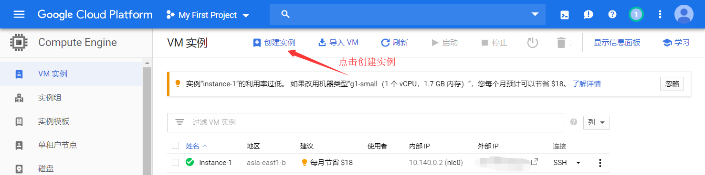
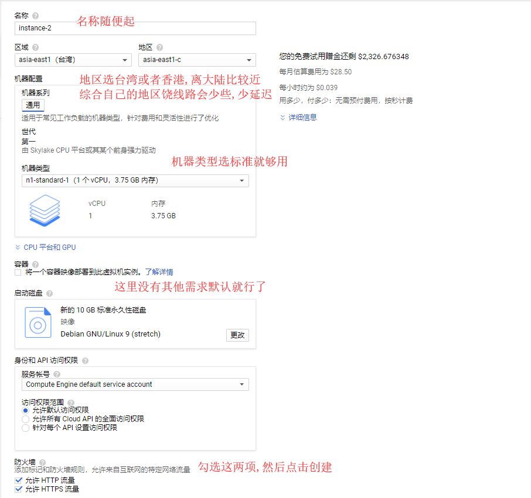
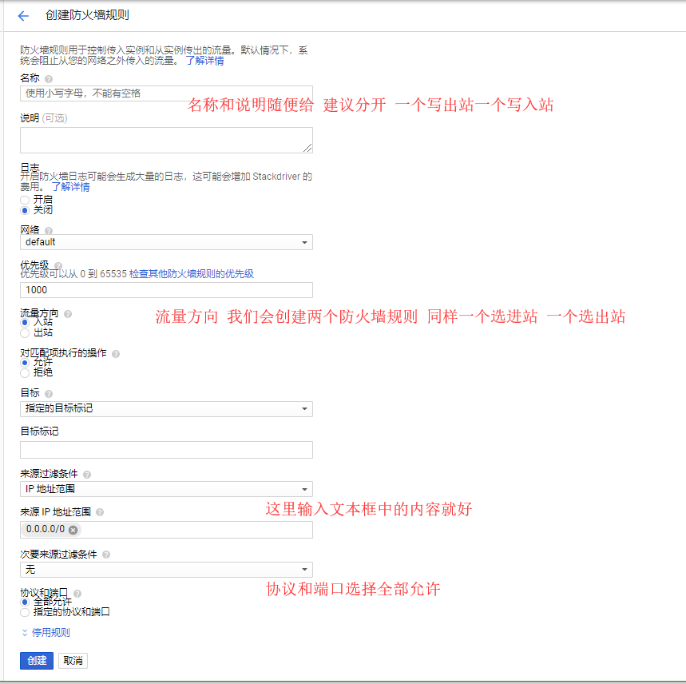
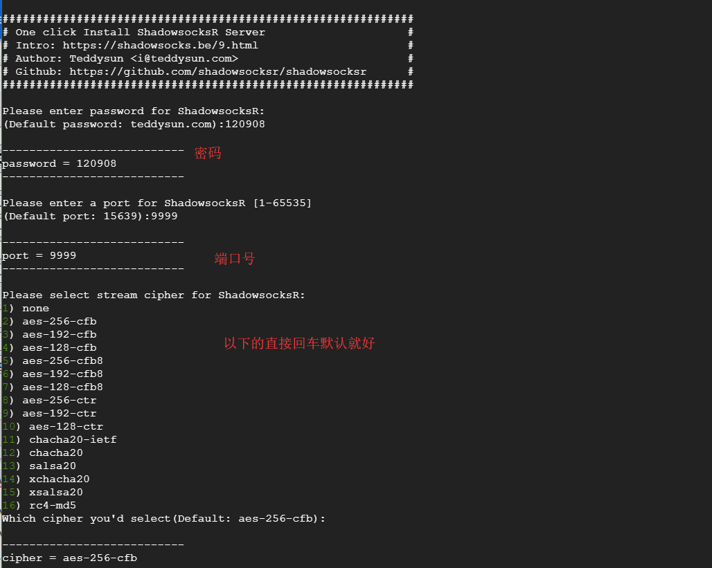
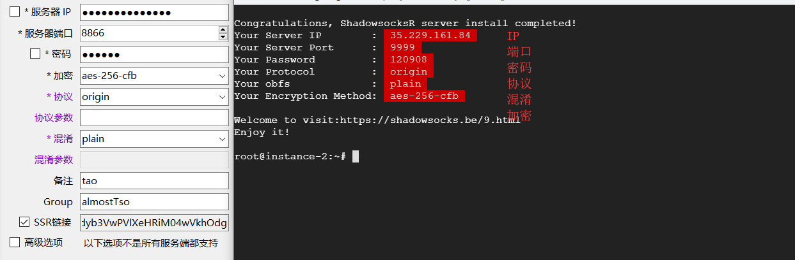

使用Google Cloud搭建ssr
在youtube或者各种搜索引擎上已经有不少的视频和教程,写本文也是分享一下自己的经验:happy:。
谷歌云平台会赠送新用户300美金，免费使用一年，薅羊毛嘛:joy:。
1.需要用到
1.1.前置的科学上网工具
1.2.谷歌账号
1.3.支持外币支付的信用卡（ps.我申请的中国银行的万事达）
这里放上我申请的信用卡链接:https://mp.weixin.qq.com/s/NXSM8C5mnq7I4NAlOOMlNw
2.申请注册谷歌云
2.1.地址:https://cloud.google.com/free/
2.2.其中的地区已经没有中国了选其他地区或国家,我选的香港,将自己的信用卡绑定后进入主页面
可以看到下图说明已经成功激活谷歌云了
3.创建实例
3.1.点击左上角菜单栏图标选中结算,去激活你的结算账号
3.2.选中Compute Engine

3.3.创建实例详细信息

3.4.测试延迟
创建VM实例完成后,会有一个外部IP,复制该IP进行
测速:https://tools.ipip.net/traceroute.php
延迟在50左右还行,100以下都能用,越小越好
4.创建防火墙规则
4.1选中菜单栏VPC网络点击防火墙规则
注意需要创建两个,下图中会有说明

5.开始搭建
5.1.在创建好的实例有一个SSH选择在浏览器窗口打开
依次输入以下命令
5.1.1. sudo -i 切换到root
5.1.2. 安装SSR
wget --no-check-certificate https://raw.githubusercontent.com/teddysun/shadowsocks_install/master/shadowsocksR.sh
chmod +x shadowsocksR.sh
./shadowsocksR.sh 2>&1 | tee shadowsocksR.log
5.1.3. ./shadowsocksR.sh 运行
5.2.回车运行后会看到下图,有解释说明


到此一个通过Google Cloud搭建的SSR就可以使用了:beers: